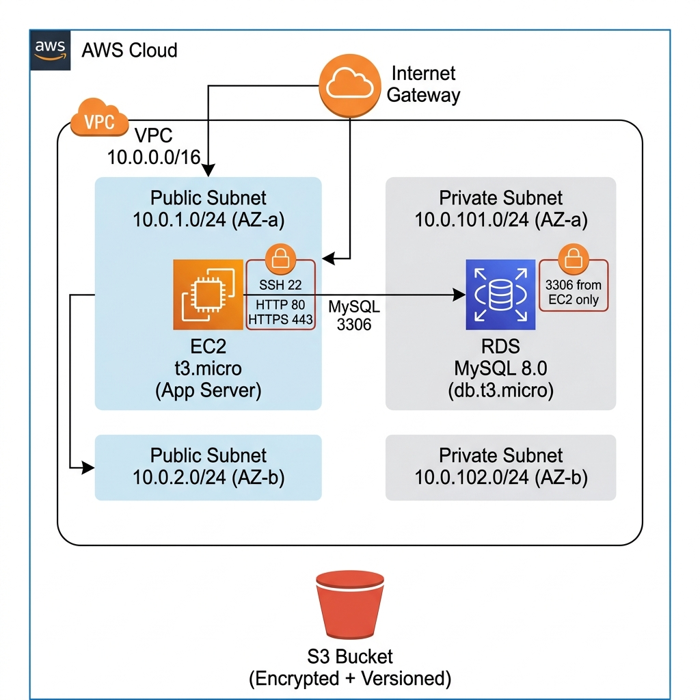

Infrastructure as Code (IaC) - Project Documentation
Capstone Project 3: Core Cloud Resources with Terraform
Table of Contents
- Architecture Overview
- Terraform Workflow
- Initialization (terraform init)
- Planning (terraform plan)
- Deployment (terraform apply)
- Destruction (terraform destroy)
- AWS Console Verification
- Networking (VPC, Subnets, Route Tables, IGW)
- Compute (EC2, Security Groups)
- Storage (S3 Bucket)
- Database (RDS MySQL)
- Infrastructure Dashboard
- Summary
1. Architecture Overview

Figure 1.1: Cloud architecture diagram showing VPC (10.0.0.0/16) with public/private subnets across two AZs, EC2 in public subnet, RDS in private subnet, Internet Gateway, and S3 bucket.
| Module | Resources | Description |
|---|
| Networking | 12 | VPC, 4 Subnets, IGW, 2 Route Tables, 4 Route Table Associations |
| Compute | 2 | EC2 Instance (t3.micro), Security Group |
| Storage | 5 | S3 Bucket, Versioning, Encryption, Lifecycle, Public Access Block |
| Database | 3 | RDS MySQL (db.t3.micro), DB Subnet Group, Security Group |
* * *
2. Terraform Workflow
2.1 Terraform Init
Initializes the working directory, downloads the AWS provider, and prepares the modules.
.png)
Figure 2.1: terraform init completing successfully — hashicorp/aws v5.100.0 provider installed, backend initialized, provider plugins found in state.
2.2 Terraform Plan
Previews the execution plan showing all 22 resources that will be created.
.png)
Figure 2.2: terraform plan reads the Amazon Linux AMI data source and begins listing resources to create, starting with module.compute.aws_instance.app.
.png)
Figure 2.3: Plan summary showing planned outputs (subnet IDs, RDS endpoint, S3 bucket details, VPC ID). Confirms: "22 to add, 0 to change, 0 to destroy".
2.3 Terraform Apply (First Deployment)
Deploys all 22 resources to AWS. The RDS instance takes ~7 minutes to provision.
.png)
Figure 2.4: terraform apply showing the database module plan with aws_db_instance resource details — encryption enabled, storage type gp3, skip_final_snapshot true.
.png)
Figure 2.5: Apply complete. RDS creation took ~7 minutes. Outputs: EC2 Instance ID i-08f1a5ba3ecbfde30, Public IP 13.233.107.254, S3 ARN arn:aws:s3:::iac-capstone-app-storage-2026, VPC vpc-056640e08e088f75f.
2.4 Terraform Destroy (First Teardown)
Tears down all 22 resources to avoid AWS charges.
.png)
Figure 2.6: terraform destroy refreshing state of all 22 resources before generating the destruction plan.
.png)
Figure 2.7: Destruction plan showing detailed attributes of each resource to be removed, including subnet CIDR blocks, availability zones, and tags.
.png)
Figure 2.8: Destroy in progress — resources removed in dependency order. Final output: "Destroy complete! Resources: 22 destroyed."
* * *
3. AWS Console Verification
The following screenshots verify that all Terraform-managed resources were successfully provisioned in the AWS Management Console.
3.1 Networking
VPC
.png)
Figure 3.1: VPC Console showing iac-capstone-dev-vpc (vpc-056640e08e088f75f) in "Available" state alongside the default VPC.
.png)
Figure 3.2: VPC details — IPv4 CIDR: 10.0.0.0/16, DNS resolution: Enabled, DNS hostnames: Enabled, Tenancy: default, Main route table and DHCP options set configured.
.png)
Figure 3.3: VPC Resource Map showing the complete network topology: 1 VPC, 4 Subnets (2 public + 2 private across ap-south-1a and 1b), 3 Route Tables.
.png)
Figure 3.4: Extended resource map showing Network Connections with the Internet Gateway iac-capstone-dev-igw connected to the public route table.
.png)
Figure 3.5: Full-page zoomed-out view of VPC resource map — all 4 subnets, 3 route tables, and IGW visible in a hierarchical layout.
Subnets
.png)
Figure 3.6: Subnets console showing all project subnets (public-1, private-1, private-2) in "Available" state within the VPC.
.png)
Figure 3.7: Public Subnet 1 — CIDR: 10.0.1.0/24, AZ: ap-south-1a, auto-assign public IPv4: Yes, 250 available IPs.
.png)
Figure 3.8: Private Subnet 1 — CIDR: 10.0.101.0/24, AZ: ap-south-1a, auto-assign public IPv4: No, 251 available IPs.
.png)
Figure 3.9: Private Subnet 2 — CIDR: 10.0.102.0/24, AZ: ap-south-1b, auto-assign public IPv4: No, 250 available IPs.
3.2 Compute
EC2 Instance
.png)
Figure 3.10: EC2 Console showing iac-capstone-d... instance (i-08f1a5ba3ecbfde30) in "Running" state, t3.micro, ap-south-1a, 3/3 status checks passed.
.png)
Figure 3.11: Instance summary — Public IP: 13.233.107.254, Public DNS: ec2-13-233-107-254.ap-south-1.compute.amazonaws.com, VPC: iac-capstone-dev-vpc, Subnet: iac-capstone-dev-public-1, IMDSv2: Required.
.png)
Figure 3.12: Instance details — AMI: ami-0133fbf29e0f5c476 (Amazon Linux 2023), Platform: Linux/UNIX, Launch time: May 06, 2026 11:18:43.
Security Groups
.png)
Figure 3.13: Security Groups console listing the two Terraform-managed groups: iac-capstone-dev-rds-sg and iac-capstone-dev-ec2-sg, both attached to the project VPC.
.png)
Figure 3.14: RDS Security Group — inbound rule: MySQL/Aurora (TCP 3306) restricted to EC2 security group only (not 0.0.0.0/0). Description: "Security group for RDS - allows MySQL traffic from EC2 only".
.png)
Figure 3.15: EC2 Security Group — 3 inbound rules: SSH (TCP 22), HTTP (TCP 80), HTTPS (TCP 443). Description: "Security group for the application EC2 instance".
3.3 Storage
S3 Bucket
.png)
Figure 3.16: S3 Console showing iac-capstone-app-storage-2026 bucket in Asia Pacific (Mumbai) ap-south-1, created May 6, 2026.
.png)
Figure 3.17: S3 bucket Objects tab — empty bucket with versioning enabled, server-side encryption (AES-256), lifecycle rules configured, and all public access blocked.
3.4 Database
RDS MySQL
.png)
Figure 3.18: RDS Console showing iac-capstone-dev-mysql in "Creating" status, MySQL Community engine, db.t3.micro, ap-south-1b.
.png)
Figure 3.19: RDS instance summary — DB identifier: iac-capstone-dev-mysql, Engine: MySQL Community, Class: db.t3.micro, Internet access: Disabled (private only).
.png)
Figure 3.20: RDS connectivity — Security group: iac-capstone-dev-rds-sg, replication role: Instance in ap-south-1b.
* * *
4. Infrastructure Dashboard
A custom-built web dashboard (in web/) that parses the terraform.tfstate file to visualize all 22 resources in real-time.
.png)
Figure 4.1: Terraform Infrastructure Dashboard showing all 22 resources organized by module — Networking (12), Compute (2), Storage (5), Database (3). Each card displays resource type, name, ID, and key attributes.
.png)
Figure 4.2: Resource detail inspector (slide-in panel) showing Internet Gateway details: resource type, module, ID, ARN, owner, VPC ID, tags, and dependencies.
.png)
Figure 4.3: Dashboard showing Storage and Database modules with S3 Bucket detail inspector — bucket name, domain names, regional endpoint, and CORS rules.
* * *
5. Summary
| Aspect | Details |
|---|
| Modular Design | 4 independent Terraform modules (networking, compute, storage, database) |
| Full Lifecycle | Init → Plan → Apply → Destroy demonstrated end-to-end |
| Security | Private subnets for RDS, restricted SGs, S3 public access blocked, encryption at rest |
| Policy-as-Code | 7 OPA/Conftest rules enforcing security standards |
| Observability | Custom web dashboard for real-time infrastructure visualization |
| Console Verification | All resources confirmed via AWS Management Console |
Resources Managed: 22 • Modules: 4
Rakesh Duvva — Cloud and DevSecOps Capstone — May 2026